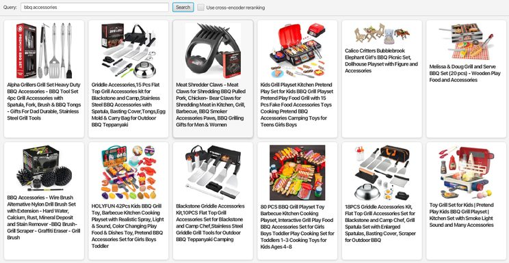
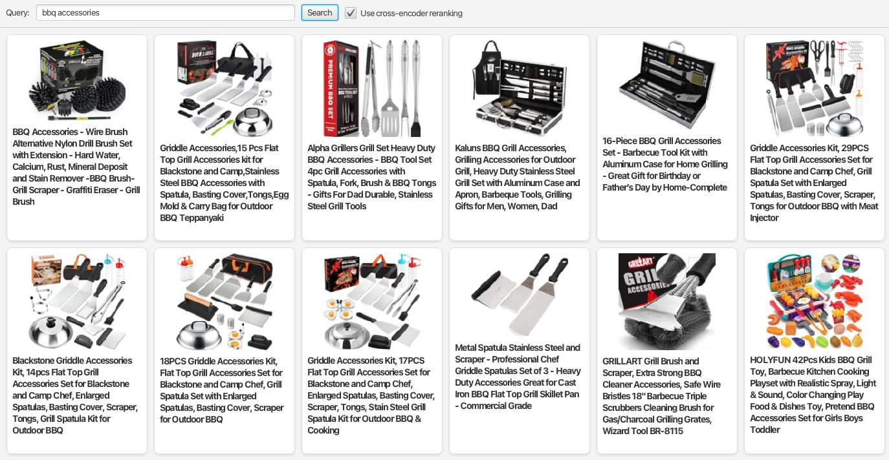
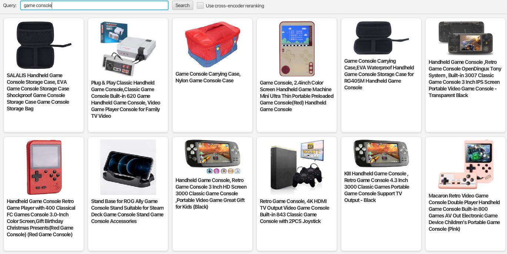
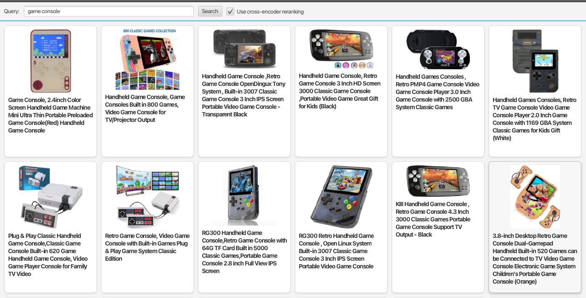
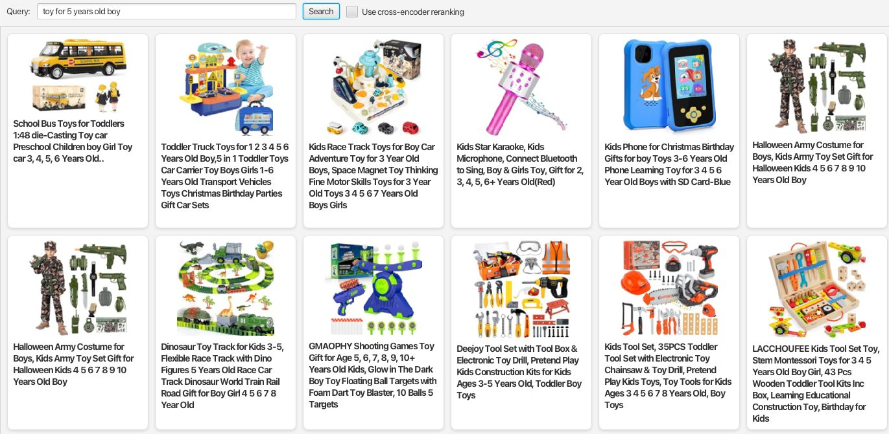
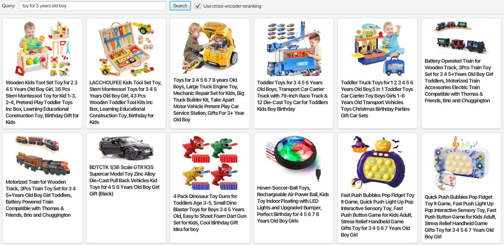

Improving E-Commerce Search With a Cross-Encoder
Cross-Encoder vs Hybrid Search
For a hybrid search, we create vector embeddings for each document, usually by using a bi-encoder. The vectors are then stored on our search index. For retrieval, a vector embedding of the search query is created and we search for the nearest neighbors within the vector space. These neighbors, representing indexed documents, are then combined with the hits from the lexical search results — hence it is called hybrid search.
A cross-encoder, on the other hand, tells us how well a document matches the query relative to other documents. This makes it suitable for re-ranking, but not for the retrieval stage. We pass in the search query together with a number of candidates, e.g. the top 100 documents from our search result. The cross-encoder is then able to rank the candidates relative to each other and returns a ranked result.
At first glance, this seems to be a step down from searching within a vector space, since we are not able to retrieve any similar documents — we are only able to re-rank what has already been retrieved. If your search returns the wrong products, you have to tackle that problem first, potentially by implementing hybrid search using a bi-encoder. But if the best-matching products are somewhere in your top 100, the cross-encoder — which gets to “see” the query and the content of your products at the same time — is more capable of picking up interactions between tokens using a so-called attention mechanism. As an example, a book teaching you all the road rules to pass a driver's test might be close in the vector space to a biography of a famous race driver. A cross-encoder will most likely pick up on the difference.
Results
Experimenting with cross-encoders, even a small model like ms-marco-MiniLM-L6-v2 (22M parameters, 90MB in size) already delivers very impressive results.
With a public dataset of 1.4M Amazon products, re-ranking with a cross-encoder shows impressive improvements just by re-ranking the top 50 products.
Examples
Using some random multi-term searches shows how much better the results are after re-ranking. A search for “bbq accessories”, without any re-ranking, has 5 toy BBQs within the top 10 — not exactly what we are looking for:

Using the cross-encoder for re-ranking, the top results look much better; the first toy only shows up at position 12:

Searching for “game console” has 3 game console accessories in the top 5:

With re-ranking, the search result looks much cleaner:

Using a longer phrase like “toy for 5 years old boy” already works pretty well without re-ranking — maybe the pink mic looks a bit off:

With re-ranking, the result looks quite different — not necessarily much better, but it did manage to push the pink mic out of the top 12:

Conclusion
After testing around 30 random search queries and comparing the results with and without re-ranking, I am impressed by the uplift. In most of them — about 2 out of 3 — the improvement was noticeable at first glance, and I was not able to find a single case in which the results degraded after re-ranking.
If you are at the point where your lexical search is not cutting it anymore and you are wondering what the first step beyond lexical search should be, using a cross-encoder for re-ranking looks like a very good place to start. It is easier to implement than hybrid search, since you can leave your lexical search implementation as it is and just add an additional step at the very end, where you rearrange the top-N documents of your search result.